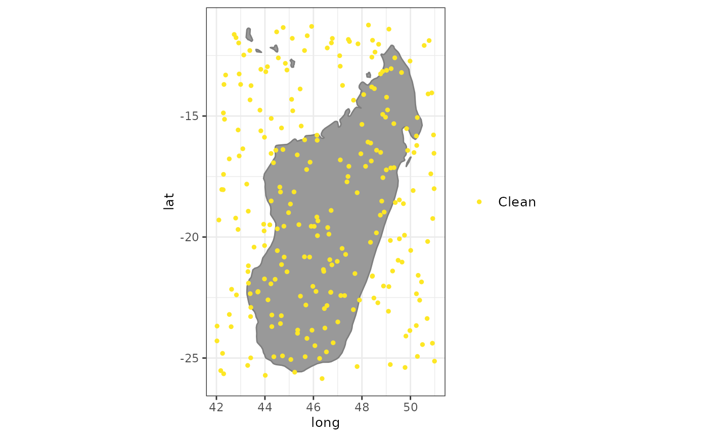

A set of plots to explore objects of the class spatialvalid. A plot
to visualize the flags from clean_coordinates
Usage
# S3 method for spatialvalid
plot(
x,
lon = "decimalLongitude",
lat = "decimalLatitude",
bgmap = NULL,
clean = TRUE,
details = FALSE,
pts_size = 1,
font_size = 10,
zoom_f = 0.1,
...
)Arguments
- x
an object of the class
spatialvalidas fromclean_coordinates.- lon
character string. The column with the longitude coordinates. Default = “decimalLongitude”.
- lat
character string. The column with the latitude coordinates. Default = “decimalLatitude”.
- bgmap
an object of the class
SpatVectororsfused as background map. Default = ggplot::borders()- clean
logical. If TRUE, non-flagged coordinates are included in the map.
- details
logical. If TRUE, occurrences are color-coded by the type of flag.
- pts_size
numeric. The point size for the plot.
- font_size
numeric. The font size for the legend and axes
- zoom_f
numeric. the fraction by which to expand the plotting area from the occurrence records. Increase, if countries do not show up on the background map.
- ...
arguments to be passed to methods.
Value
A plot of the records flagged as potentially erroneous by
clean_coordinates.
Examples
exmpl <- data.frame(species = sample(letters, size = 250, replace = TRUE),
decimalLongitude = runif(250, min = 42, max = 51),
decimalLatitude = runif(250, min = -26, max = -11))
test <- clean_coordinates(exmpl, species = "species",
tests = c("sea", "gbif", "zeros"),
verbose = FALSE)
summary(test)
#> .val .zer .gbf .summary
#> 0 0 0 0
plot(test)
